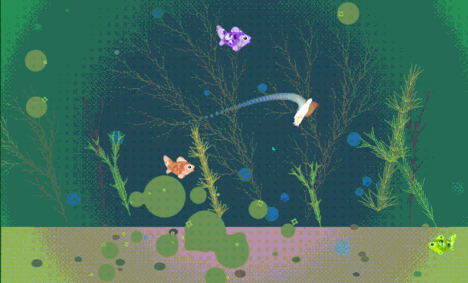
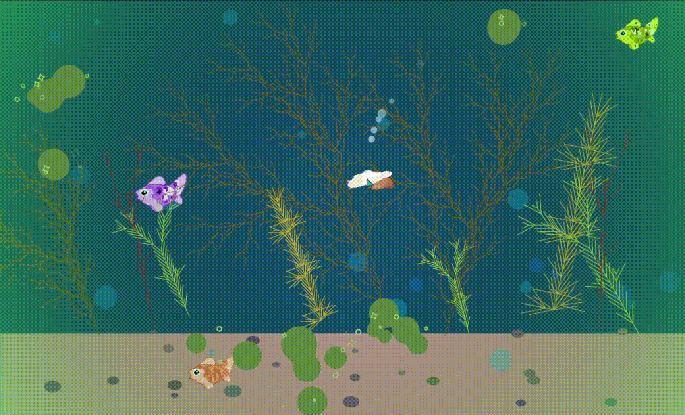
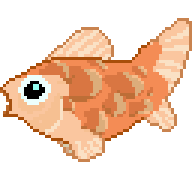
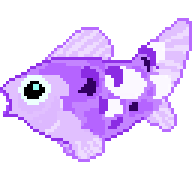
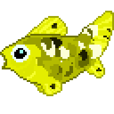

← All projects
p5.js GLSL WebGL Procreate
Case Study
Algae Cleaner: Tank Sim
You are a snail suctioned to the inside of a fish tank. Move your mouse to steer and eat the algae before it takes over — left-click to blow a few bubbles.
Overview: Algae Cleaner is an interactive fish tank simulation built in p5.js where players control a snail eating procedurally growing algae blobs before they overtake the environment. The project combines custom generative art systems, player-driven interaction, and original hand-drawn assets into a cohesive, contained ecosystem.
Play the p5.js sketchKey Features
- Procedural metaball algae growth
- Dynamic algae vignette feedback
- L-system seaweed with boundary detection
- Click-spawned bubble particles
- Original 2D assets
- Contained tank environment





Contributions
Art & Design
- Implemented a metaball system where algae blobs grow, oscillate, and bridge neighboring blobs with bezier curves to create organic fluid shapes.
- Built a radial gradient vignette that grows greener as the algae array fills, providing passive feedback on tank cleanliness without UI elements.
- Drew original fish, snail, and environmental assets across a full layered tank scene.
Development
- Integrated an L-system seaweed renderer with boundary detection to prevent branches from escaping tank walls.
- Added click-to-spawn bubble particles and a persistent snail trail to reinforce the player's presence on the glass.
- Wrote a reusable parametric star function supporting straight-edged and bezier-curved styles for decorative particle details.
Impact
Add impact details here.